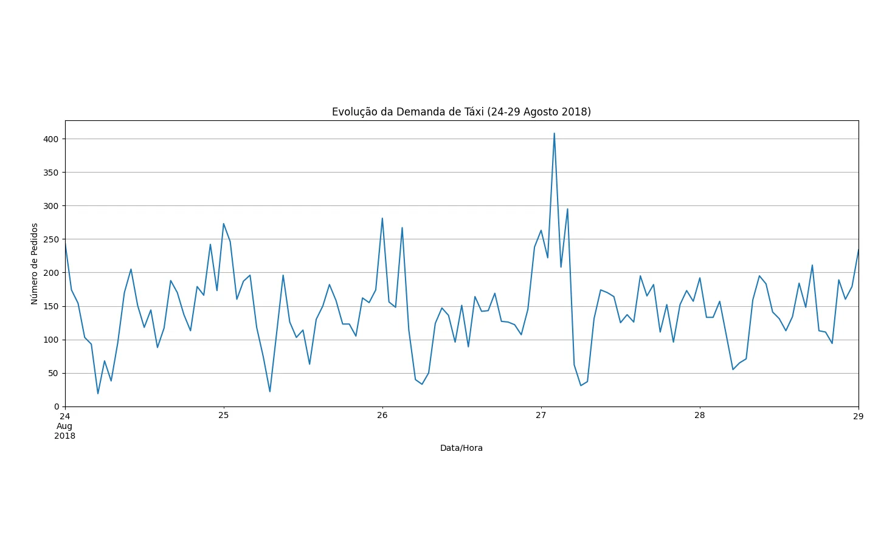
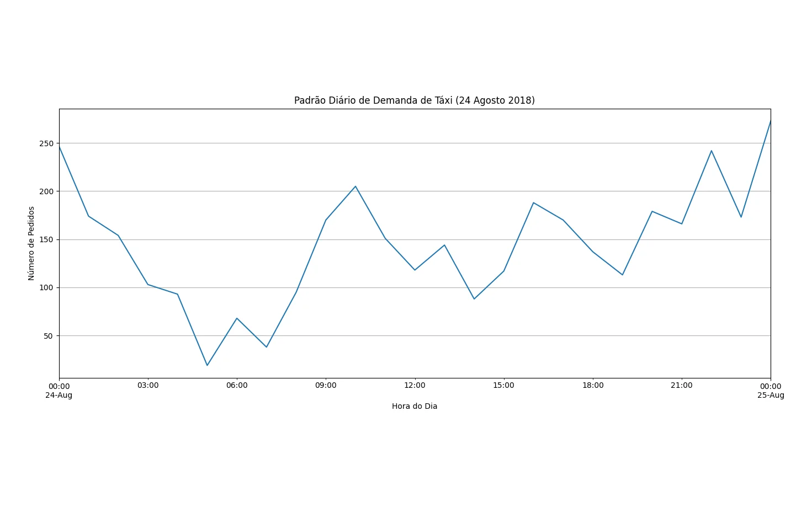
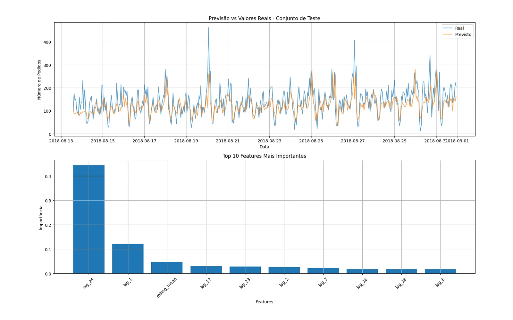

PortfólioModelos preditivos e estatística
Previsão de pedidos de táxi
Modelo que prevê o número de pedidos de táxi na próxima hora, a partir de seis meses de pedidos em aeroportos. A meta era erro (REQM) de até 48 pedidos no teste. O Random Forest com profundidade 12 chegou a 47,42.
- Contexto
- Bootcamp de Ciência de Dados, TripleTen
- Problema
- Regressão em série temporal, horizonte de 1 hora
- Dados
- Pedidos de táxi de março a agosto de 2018
- Métrica
- REQM, meta de até 48 pedidos
Objetivo
Prever quantos pedidos de táxi chegam na próxima hora. Com a previsão, a empresa aloca motoristas antes dos picos.
Critério de aceite: raiz do erro quadrático médio (REQM) de até 48 pedidos no conjunto de teste.
Dados
- OrigemArquivo de pedidos de táxi em aeroportos, com registros a cada 10 minutos, fornecido pelo curso.
- Tamanho4.416 linhas depois de somar os pedidos por hora. Sem valores ausentes e sem horas duplicadas.
- Variável alvonum_orders: pedidos na hora. Mediana 78, desvio padrão 45, mínimo 0, máximo 462.
- DivisãoOrdem do tempo mantida: 3.974 horas para treino (90%) e as últimas 442 para teste (10%).
Organização
As médias usadas para preencher as primeiras horas vêm só do treino. Assim o teste não vaza para o treino.
Variáveis do modelo
Modelos e métricas
REQM no teste (pedidos por hora)
Meta: até 48. Só o Random Forest com profundidade 12 ficou abaixo.
REQM no treino (pedidos por hora)
Distância grande entre treino e teste: sinal de sobreajuste.
Achados
REQM no teste do Random Forest com profundidade 12, abaixo da meta de 48.
da importância do modelo vem da defasagem de 24 horas: a mesma hora do dia anterior.
vem da hora imediatamente anterior. A média móvel de 12 horas soma 4,8%.
é o vale diário de demanda, com menos de 50 pedidos por hora.
Limites
- Margem pequenaO melhor modelo ficou 0,58 pedido abaixo da meta. Os três modelos ficaram entre 47,42 e 48,41.
- SobreajusteREQM de 12,00 no treino e 47,42 no teste no modelo escolhido.
- Hora do diaA hora não entrou como variável. O ciclo diário chega ao modelo só pelas defasagens.
- Período curtoSeis meses de dados. Não há um ano completo para medir sazonalidade anual.
Gráficos do notebook
Imagens geradas pelo notebook do projeto.





